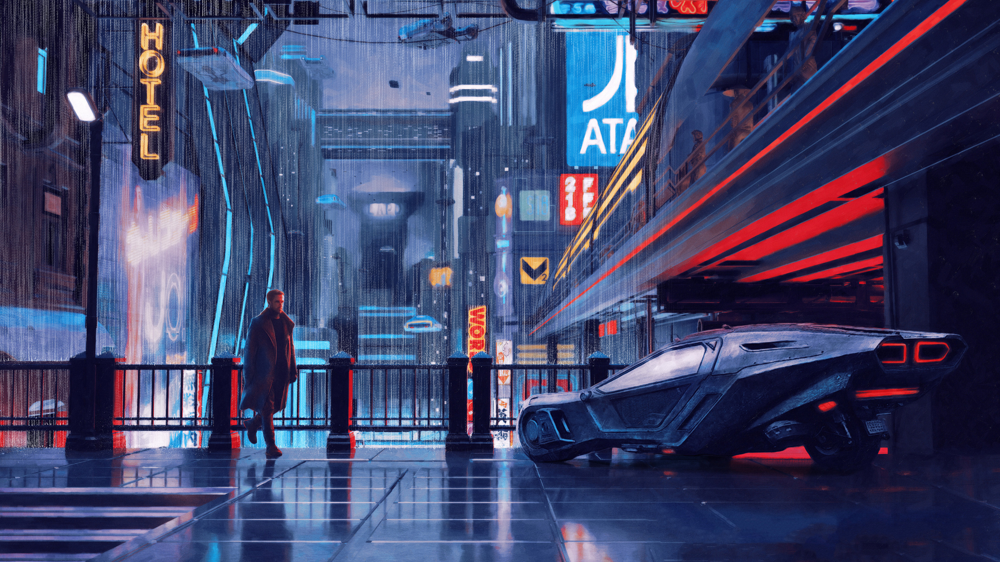

Blade Runner 2049 Summary
Decades after the original Blade Runner, director Denis Villeneuve brought back the popular franchise with the release of Blade Runner 2049. This film is set thirty years after the original and serves as a sequel to the landmark film. Ridley Scott, the director of the original film, made a reappearance as executive producer on this film. Ryan Gosling plays a character called K, who is a Nexus-9 replicant blade runner. Ana de Armas, Robin Wright and Jared Leto also make an appearance, alongside Harrison Ford and Edward James Olmos, who play their original roles from the 1982 film. Due to the huge Blade Runner fan base, this film had a lot to live up to, but was generally praised by critics. However, the film did not do well in the box office

Behind the Scenes
With sweeping and stunning cinematography as well as a soundtrack created by Hans Zimmer, the film is a breathtaking and addicting mix of old and new. It also has an unintended warning about both the climate and corporate power, greed, and what happens when humans follow orders without question. The film is a masterclass in scope, ranging from radioactive deserts, to rainy futuristic cities, and even a sea wall scene that culminates it all.